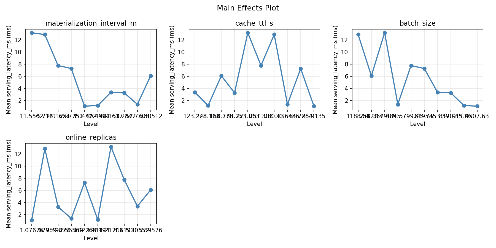
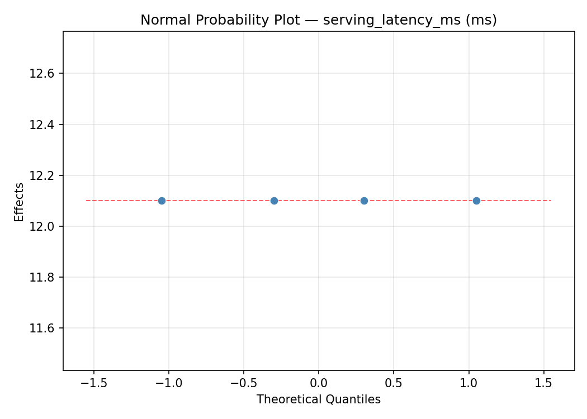
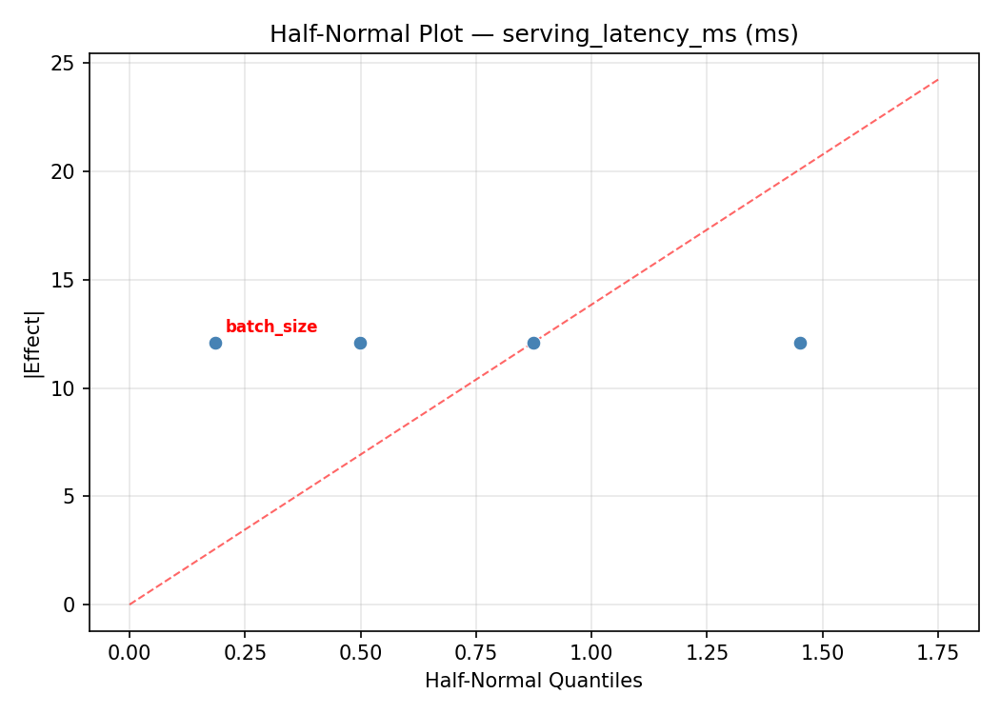
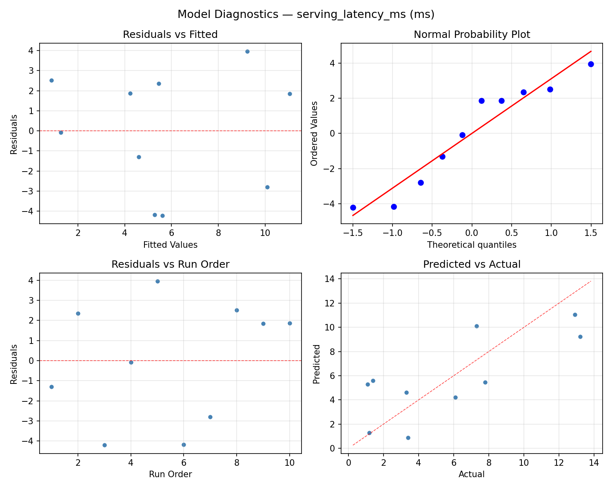
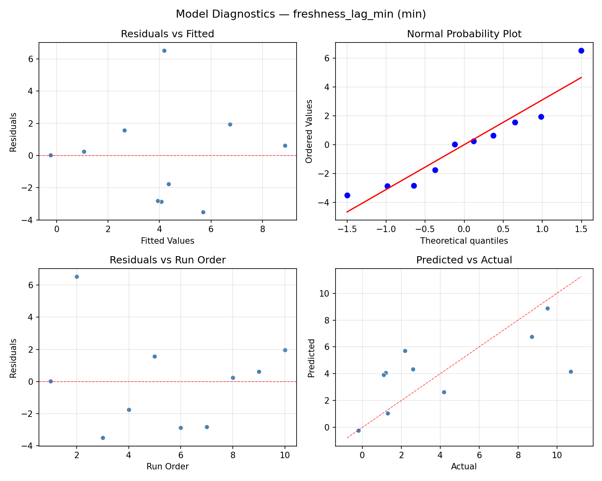
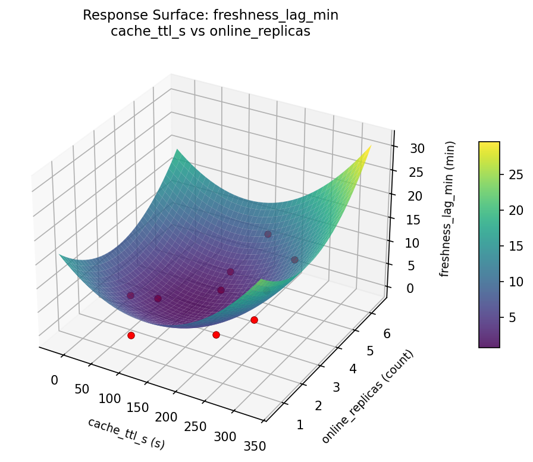
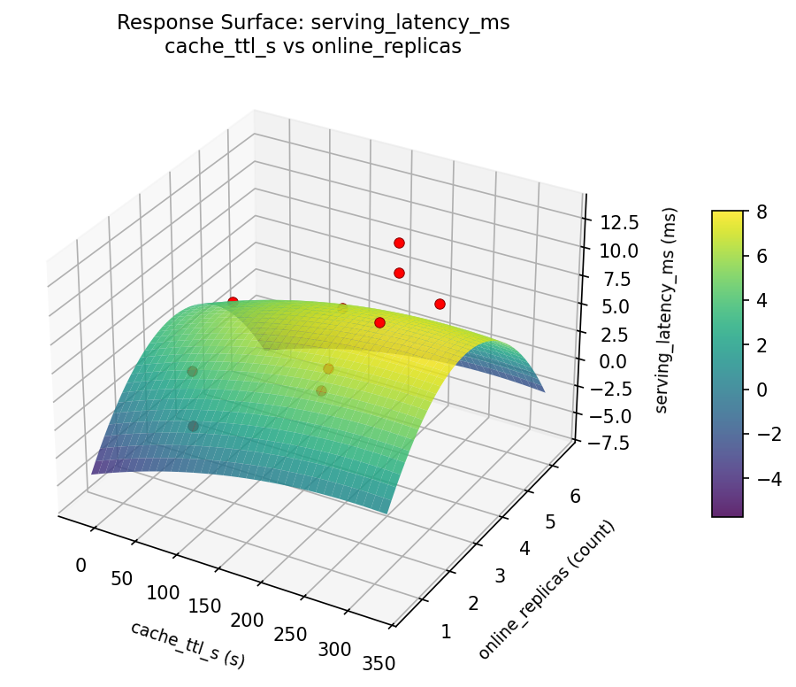
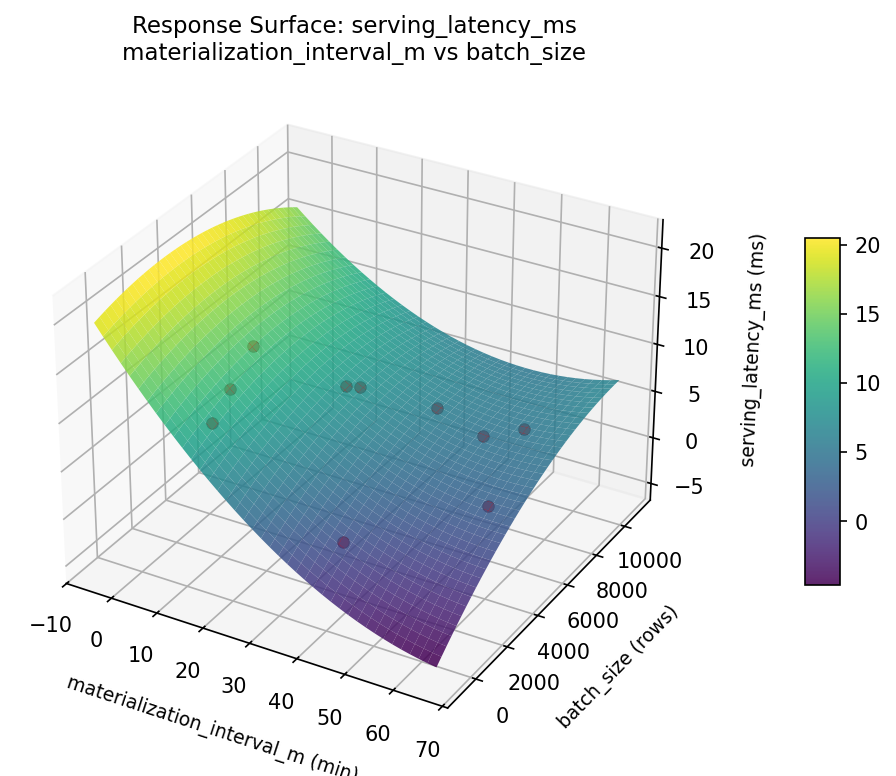
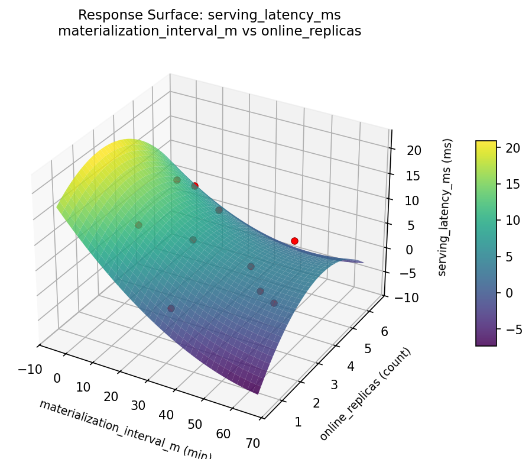

Summary
This experiment investigates feature store freshness. Latin Hypercube of 4 feature store parameters for serving latency and feature freshness.
The design varies 4 factors: materialization interval m (min), ranging from 1 to 60, cache ttl s (s), ranging from 10 to 300, batch size (rows), ranging from 100 to 10000, and online replicas (count), ranging from 1 to 6. The goal is to optimize 2 responses: serving latency ms (ms) (minimize) and freshness lag min (min) (minimize). Fixed conditions held constant across all runs include offline store = s3_parquet, online store = redis.
Latin Hypercube Sampling was used to space 10 runs across the 4-dimensional factor space with good coverage and minimal gaps, making it ideal for computer experiments where the response surface may be complex.
Key Findings
For serving latency ms, the most influential factors were materialization interval m (25.0%), cache ttl s (25.0%), batch size (25.0%). The best observed value was 1.1 (at materialization interval m = 39.8455, cache ttl s = 221.076, batch size = 7226.38).
For freshness lag min, the most influential factors were materialization interval m (25.0%), cache ttl s (25.0%), batch size (25.0%). The best observed value was -0.2 (at materialization interval m = 11.1795, cache ttl s = 210.907, batch size = 4240.79).
Recommended Next Steps
- Consider whether any fixed factors should be varied in a future study.
Experimental Setup
Factors
| Factor | Low | High | Unit |
|---|
materialization_interval_m | 1 | 60 | min |
cache_ttl_s | 10 | 300 | s |
batch_size | 100 | 10000 | rows |
online_replicas | 1 | 6 | count |
Fixed: offline_store = s3_parquet, online_store = redis
Responses
| Response | Direction | Unit |
|---|
serving_latency_ms | ↓ minimize | ms |
freshness_lag_min | ↓ minimize | min |
Configuration
{
"metadata": {
"name": "Feature Store Freshness",
"description": "Latin Hypercube of 4 feature store parameters for serving latency and feature freshness"
},
"factors": [
{
"name": "materialization_interval_m",
"levels": [
"1",
"60"
],
"type": "continuous",
"unit": "min"
},
{
"name": "cache_ttl_s",
"levels": [
"10",
"300"
],
"type": "continuous",
"unit": "s"
},
{
"name": "batch_size",
"levels": [
"100",
"10000"
],
"type": "continuous",
"unit": "rows"
},
{
"name": "online_replicas",
"levels": [
"1",
"6"
],
"type": "continuous",
"unit": "count"
}
],
"fixed_factors": {
"offline_store": "s3_parquet",
"online_store": "redis"
},
"responses": [
{
"name": "serving_latency_ms",
"optimize": "minimize",
"unit": "ms"
},
{
"name": "freshness_lag_min",
"optimize": "minimize",
"unit": "min"
}
],
"settings": {
"operation": "latin_hypercube",
"test_script": "use_cases/46_feature_store_freshness/sim.sh"
}
}
Experimental Matrix
The Latin Hypercube Design produces 10 runs. Each row is one experiment with specific factor settings.
| Run | materialization_interval_m | cache_ttl_s | batch_size | online_replicas |
|---|
| 1 | 23.7626 | 34.7302 | 6312.9 | 4.85806 |
| 2 | 4.65909 | 173.938 | 5056.2 | 1.34696 |
| 3 | 37.3373 | 138.469 | 9952.39 | 3.76598 |
| 4 | 50.6236 | 103.511 | 854.404 | 4.06335 |
| 5 | 48.107 | 277.393 | 2532.27 | 2.40346 |
| 6 | 33.8919 | 56.4223 | 4505.17 | 3.13861 |
| 7 | 11.0284 | 191.75 | 3222.72 | 5.92413 |
| 8 | 28.8017 | 252.505 | 1183.33 | 5.25669 |
| 9 | 17.3975 | 240.757 | 7101.59 | 1.55125 |
| 10 | 55.9749 | 74.9791 | 8960.08 | 2.81131 |
Step-by-Step Workflow
1
Preview the design
$ doe info --config use_cases/46_feature_store_freshness/config.json
2
Generate the runner script
$ doe generate --config use_cases/46_feature_store_freshness/config.json \
--output use_cases/46_feature_store_freshness/results/run.sh --seed 42
3
Execute the experiments
$ bash use_cases/46_feature_store_freshness/results/run.sh
4
Analyze results
$ doe analyze --config use_cases/46_feature_store_freshness/config.json
5
Get optimization recommendations
$ doe optimize --config use_cases/46_feature_store_freshness/config.json
6
Multi-objective optimization
With 2 competing responses, use --multi to find the best compromise via Derringer–Suich desirability.
$ doe optimize --config use_cases/46_feature_store_freshness/config.json --multi
7
Generate the HTML report
$ doe report --config use_cases/46_feature_store_freshness/config.json \
--output use_cases/46_feature_store_freshness/results/report.html
Features Exercised
| Feature | Value |
|---|
| Design type | latin_hypercube |
| Factor types | continuous (all 4) |
| Arg style | double-dash |
| Responses | 2 (serving_latency_ms ↓, freshness_lag_min ↓) |
| Total runs | 10 |
Analysis Results
Generated from actual experiment runs using the DOE Helper Tool.
Response: serving_latency_ms
Top factors: materialization_interval_m (25.0%), cache_ttl_s (25.0%), batch_size (25.0%).
ANOVA
| Source | DF | SS | MS | F | p-value |
|---|
| Source | DF | SS | MS | F | p-value |
| materialization_interval_m | 9 | 186.1210 | 20.6801 | | |
| cache_ttl_s | 9 | 186.1210 | 20.6801 | | |
| batch_size | 9 | 186.1210 | 20.6801 | | |
| online_replicas | 9 | 186.1210 | 20.6801 | | |
| Error | (Lenth | PSE) | 0 | 0.0000 | 0.0000 |
| Total | 9 | 186.1210 | 20.6801 | | |
Pareto Chart

Main Effects Plot

Normal Probability Plot of Effects

Half-Normal Plot of Effects

Model Diagnostics

Response: freshness_lag_min
Top factors: materialization_interval_m (25.0%), cache_ttl_s (25.0%), batch_size (25.0%).
ANOVA
| Source | DF | SS | MS | F | p-value |
|---|
| Source | DF | SS | MS | F | p-value |
| materialization_interval_m | 9 | 143.4810 | 15.9423 | | |
| cache_ttl_s | 9 | 143.4810 | 15.9423 | | |
| batch_size | 9 | 143.4810 | 15.9423 | | |
| online_replicas | 9 | 143.4810 | 15.9423 | | |
| Error | (Lenth | PSE) | 0 | 0.0000 | 0.0000 |
| Total | 9 | 143.4810 | 15.9423 | | |
Pareto Chart

Main Effects Plot

Normal Probability Plot of Effects
Half-Normal Plot of Effects
Model Diagnostics

Response Surface Plots
3D surfaces fitted with quadratic RSM. Red dots are observed data points.
freshness lag min batch size vs online replicas

freshness lag min cache ttl s vs batch size

freshness lag min cache ttl s vs online replicas

freshness lag min materialization interval m vs batch size

freshness lag min materialization interval m vs cache ttl s

freshness lag min materialization interval m vs online replicas

serving latency ms batch size vs online replicas

serving latency ms cache ttl s vs batch size

serving latency ms cache ttl s vs online replicas

serving latency ms materialization interval m vs batch size

serving latency ms materialization interval m vs cache ttl s

serving latency ms materialization interval m vs online replicas

Multi-Objective Optimization
When responses compete, Derringer–Suich desirability finds the best compromise.
Each response is scaled to a 0–1 desirability, then combined via a weighted geometric mean.
Overall Desirability
D = 0.8846
Per-Response Desirability
| Response | Weight | Desirability | Predicted | Dir |
|---|
serving_latency_ms |
1.0 |
|
3.30 0.7893 3.30 ms |
↓ |
freshness_lag_min |
1.5 |
|
-0.20 0.9545 -0.20 min |
↓ |
Recommended Settings
| Factor | Value |
|---|
materialization_interval_m | 50.8848 min |
cache_ttl_s | 135.321 s |
batch_size | 7640.26 rows |
online_replicas | 4.98895 count |
Source: from observed run #1
Trade-off Summary
Sacrifice = how much worse than single-objective best.
| Response | Predicted | Best Observed | Sacrifice |
|---|
freshness_lag_min | -0.20 | -0.20 | +0.00 |
Top 3 Runs by Desirability
| Run | D | Factor Settings |
|---|
| #6 | 0.8827 | materialization_interval_m=39.2028, cache_ttl_s=44.4917, batch_size=401.765, online_replicas=2.39833 |
| #3 | 0.8210 | materialization_interval_m=8.10386, cache_ttl_s=185.242, batch_size=6454.55, online_replicas=2.69511 |
Model Quality
| Response | R² | Type |
|---|
freshness_lag_min | 0.3923 | linear |
Full Multi-Objective Output
============================================================
MULTI-OBJECTIVE OPTIMIZATION
Method: Derringer-Suich Desirability Function
============================================================
Overall desirability: D = 0.8846
Response Weight Desirability Predicted Direction
---------------------------------------------------------------------
serving_latency_ms 1.0 0.7893 3.30 ms ↓
freshness_lag_min 1.5 0.9545 -0.20 min ↓
Recommended settings:
materialization_interval_m = 50.8848 min
cache_ttl_s = 135.321 s
batch_size = 7640.26 rows
online_replicas = 4.98895 count
(from observed run #1)
Trade-off summary:
serving_latency_ms: 3.30 (best observed: 1.10, sacrifice: +2.20)
freshness_lag_min: -0.20 (best observed: -0.20, sacrifice: +0.00)
Model quality:
serving_latency_ms: R² = 0.1848 (linear)
freshness_lag_min: R² = 0.3923 (linear)
Top 3 observed runs by overall desirability:
1. Run #1 (D=0.8846): materialization_interval_m=50.8848, cache_ttl_s=135.321, batch_size=7640.26, online_replicas=4.98895
2. Run #6 (D=0.8827): materialization_interval_m=39.2028, cache_ttl_s=44.4917, batch_size=401.765, online_replicas=2.39833
3. Run #3 (D=0.8210): materialization_interval_m=8.10386, cache_ttl_s=185.242, batch_size=6454.55, online_replicas=2.69511
Full Analysis Output
=== Main Effects: serving_latency_ms ===
Factor Effect Std Error % Contribution
--------------------------------------------------------------
materialization_interval_m 12.1000 1.4381 25.0%
cache_ttl_s 12.1000 1.4381 25.0%
batch_size 12.1000 1.4381 25.0%
online_replicas 12.1000 1.4381 25.0%
=== ANOVA Table: serving_latency_ms ===
Source DF SS MS F p-value
-----------------------------------------------------------------------------
materialization_interval_m 9 186.1210 20.6801
cache_ttl_s 9 186.1210 20.6801
batch_size 9 186.1210 20.6801
online_replicas 9 186.1210 20.6801
Error (Lenth PSE) 0 0.0000 0.0000
Total 9 186.1210 20.6801
Note: Error estimated using Lenth's pseudo-standard-error (unreplicated design)
=== Summary Statistics: serving_latency_ms ===
materialization_interval_m:
Level N Mean Std Min Max
------------------------------------------------------------
14.4806 1 7.3000 0.0000 7.3000 7.3000
2.05638 1 3.3000 0.0000 3.3000 3.3000
23.0759 1 1.2000 0.0000 1.2000 1.2000
26.1949 1 3.4000 0.0000 3.4000 3.4000
31.0427 1 13.2000 0.0000 13.2000 13.2000
37.6193 1 12.9000 0.0000 12.9000 12.9000
47.3515 1 1.4000 0.0000 1.4000 1.4000
49.5084 1 7.8000 0.0000 7.8000 7.8000
57.5698 1 6.1000 0.0000 6.1000 6.1000
8.63293 1 1.1000 0.0000 1.1000 1.1000
cache_ttl_s:
Level N Mean Std Min Max
------------------------------------------------------------
104.795 1 7.8000 0.0000 7.8000 7.8000
138.348 1 12.9000 0.0000 12.9000 12.9000
158.475 1 1.2000 0.0000 1.2000 1.2000
187.818 1 1.1000 0.0000 1.1000 1.1000
226.288 1 7.3000 0.0000 7.3000 7.3000
265.043 1 6.1000 0.0000 6.1000 6.1000
292.057 1 13.2000 0.0000 13.2000 13.2000
37.0665 1 3.4000 0.0000 3.4000 3.4000
55.7061 1 1.4000 0.0000 1.4000 1.4000
73.0513 1 3.3000 0.0000 3.3000 3.3000
batch_size:
Level N Mean Std Min Max
------------------------------------------------------------
1079.5 1 12.9000 0.0000 12.9000 12.9000
1376.18 1 1.1000 0.0000 1.1000 1.1000
2621.87 1 3.3000 0.0000 3.3000 3.3000
3692.19 1 6.1000 0.0000 6.1000 6.1000
4713.28 1 7.3000 0.0000 7.3000 7.3000
5078.94 1 1.4000 0.0000 1.4000 1.4000
6307.98 1 13.2000 0.0000 13.2000 13.2000
7401.28 1 3.4000 0.0000 3.4000 3.4000
8882.93 1 7.8000 0.0000 7.8000 7.8000
9898.7 1 1.2000 0.0000 1.2000 1.2000
online_replicas:
Level N Mean Std Min Max
------------------------------------------------------------
1.31093 1 6.1000 0.0000 6.1000 6.1000
1.89122 1 13.2000 0.0000 13.2000 13.2000
2.46586 1 3.3000 0.0000 3.3000 3.3000
2.64077 1 1.1000 0.0000 1.1000 1.1000
3.02501 1 1.4000 0.0000 1.4000 1.4000
3.89754 1 7.8000 0.0000 7.8000 7.8000
4.30846 1 12.9000 0.0000 12.9000 12.9000
4.68266 1 3.4000 0.0000 3.4000 3.4000
5.20503 1 1.2000 0.0000 1.2000 1.2000
5.59373 1 7.3000 0.0000 7.3000 7.3000
=== Main Effects: freshness_lag_min ===
Factor Effect Std Error % Contribution
--------------------------------------------------------------
materialization_interval_m 10.9000 1.2626 25.0%
cache_ttl_s 10.9000 1.2626 25.0%
batch_size 10.9000 1.2626 25.0%
online_replicas 10.9000 1.2626 25.0%
=== ANOVA Table: freshness_lag_min ===
Source DF SS MS F p-value
-----------------------------------------------------------------------------
materialization_interval_m 9 143.4810 15.9423
cache_ttl_s 9 143.4810 15.9423
batch_size 9 143.4810 15.9423
online_replicas 9 143.4810 15.9423
Error (Lenth PSE) 0 0.0000 0.0000
Total 9 143.4810 15.9423
Note: Error estimated using Lenth's pseudo-standard-error (unreplicated design)
=== Summary Statistics: freshness_lag_min ===
materialization_interval_m:
Level N Mean Std Min Max
------------------------------------------------------------
14.4806 1 1.1000 0.0000 1.1000 1.1000
2.05638 1 -0.2000 0.0000 -0.2000 -0.2000
23.0759 1 2.6000 0.0000 2.6000 2.6000
26.1949 1 1.3000 0.0000 1.3000 1.3000
31.0427 1 4.2000 0.0000 4.2000 4.2000
37.6193 1 9.5000 0.0000 9.5000 9.5000
47.3515 1 2.2000 0.0000 2.2000 2.2000
49.5084 1 10.7000 0.0000 10.7000 10.7000
57.5698 1 8.7000 0.0000 8.7000 8.7000
8.63293 1 1.2000 0.0000 1.2000 1.2000
cache_ttl_s:
Level N Mean Std Min Max
------------------------------------------------------------
104.795 1 10.7000 0.0000 10.7000 10.7000
138.348 1 9.5000 0.0000 9.5000 9.5000
158.475 1 2.6000 0.0000 2.6000 2.6000
187.818 1 1.2000 0.0000 1.2000 1.2000
226.288 1 1.1000 0.0000 1.1000 1.1000
265.043 1 8.7000 0.0000 8.7000 8.7000
292.057 1 4.2000 0.0000 4.2000 4.2000
37.0665 1 1.3000 0.0000 1.3000 1.3000
55.7061 1 2.2000 0.0000 2.2000 2.2000
73.0513 1 -0.2000 0.0000 -0.2000 -0.2000
batch_size:
Level N Mean Std Min Max
------------------------------------------------------------
1079.5 1 9.5000 0.0000 9.5000 9.5000
1376.18 1 1.2000 0.0000 1.2000 1.2000
2621.87 1 -0.2000 0.0000 -0.2000 -0.2000
3692.19 1 8.7000 0.0000 8.7000 8.7000
4713.28 1 1.1000 0.0000 1.1000 1.1000
5078.94 1 2.2000 0.0000 2.2000 2.2000
6307.98 1 4.2000 0.0000 4.2000 4.2000
7401.28 1 1.3000 0.0000 1.3000 1.3000
8882.93 1 10.7000 0.0000 10.7000 10.7000
9898.7 1 2.6000 0.0000 2.6000 2.6000
online_replicas:
Level N Mean Std Min Max
------------------------------------------------------------
1.31093 1 8.7000 0.0000 8.7000 8.7000
1.89122 1 4.2000 0.0000 4.2000 4.2000
2.46586 1 -0.2000 0.0000 -0.2000 -0.2000
2.64077 1 1.2000 0.0000 1.2000 1.2000
3.02501 1 2.2000 0.0000 2.2000 2.2000
3.89754 1 10.7000 0.0000 10.7000 10.7000
4.30846 1 9.5000 0.0000 9.5000 9.5000
4.68266 1 1.3000 0.0000 1.3000 1.3000
5.20503 1 2.6000 0.0000 2.6000 2.6000
5.59373 1 1.1000 0.0000 1.1000 1.1000
Optimization Recommendations
=== Optimization: serving_latency_ms ===
Direction: minimize
Best observed run: #6
materialization_interval_m = 39.8455
cache_ttl_s = 221.076
batch_size = 7226.38
online_replicas = 5.69694
Value: 1.1
RSM Model (linear, R² = 0.5680, Adj R² = 0.2224):
Coefficients:
intercept +5.7965
materialization_interval_m +1.2850
cache_ttl_s -2.2339
batch_size +1.1635
online_replicas -6.1432
Predicted optimum (from linear model, at observed points):
materialization_interval_m = 33.4834
cache_ttl_s = 96.7479
batch_size = 5949.18
online_replicas = 1.32179
Predicted value: 12.3878
Surface optimum (via L-BFGS-B, linear model):
materialization_interval_m = 1
cache_ttl_s = 300
batch_size = 100
online_replicas = 6
Predicted value: -5.0291
Model quality: Moderate fit — use predictions directionally, not precisely.
Factor importance:
1. materialization_interval_m (effect: 12.1, contribution: 25.0%)
2. cache_ttl_s (effect: 12.1, contribution: 25.0%)
3. batch_size (effect: 12.1, contribution: 25.0%)
4. online_replicas (effect: 12.1, contribution: 25.0%)
=== Optimization: freshness_lag_min ===
Direction: minimize
Best observed run: #1
materialization_interval_m = 11.1795
cache_ttl_s = 210.907
batch_size = 4240.79
online_replicas = 3.83861
Value: -0.2
RSM Model (linear, R² = 0.2319, Adj R² = -0.3826):
Coefficients:
intercept +4.1202
materialization_interval_m -0.4132
cache_ttl_s -1.2667
batch_size -2.3067
online_replicas -2.1018
Predicted optimum (from linear model, at observed points):
materialization_interval_m = 16.6117
cache_ttl_s = 263.863
batch_size = 944.75
online_replicas = 1.65859
Predicted value: 6.8249
Surface optimum (via L-BFGS-B, linear model):
materialization_interval_m = 60
cache_ttl_s = 300
batch_size = 10000
online_replicas = 6
Predicted value: -1.9681
Model quality: Weak fit — consider adding center points or using a different design.
Factor importance:
1. materialization_interval_m (effect: 10.9, contribution: 25.0%)
2. cache_ttl_s (effect: 10.9, contribution: 25.0%)
3. batch_size (effect: 10.9, contribution: 25.0%)
4. online_replicas (effect: 10.9, contribution: 25.0%)